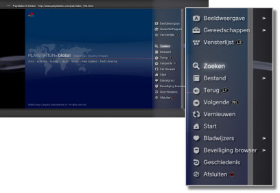

Netwerk > Basisbediening van de internetbrowser
Basisbediening van de internetbrowser
Het scherm bekijken

(1) |
Titel van de pagina |
|---|---|
(2) |
Adres van de pagina |
(3) |
SSL-pictogram |
(4) |
Bezig-pictogram |
(5) |
Browserbeveiligingspictogram |
(6) |
Doeladres van de link |
(7) |
Cursor |
Schuifmethoden
| Richtingstoetsen | De aanwijzer naar een link verplaatsen. |
|---|---|
| Rechter joystick | In de gewenste richting schuiven. |
Het menu gebruiken
Als u op de  -toets drukt wordt het menu weergegeven, waar u verscheidene handelingen en instellingen kunt uitvoeren. Het menu kan worden weergegeven of verborgen door op de -toets te drukken. De menu-items verschillen in de browsemodus en de venstermodus.
-toets drukt wordt het menu weergegeven, waar u verscheidene handelingen en instellingen kunt uitvoeren. Het menu kan worden weergegeven of verborgen door op de -toets te drukken. De menu-items verschillen in de browsemodus en de venstermodus.

Voer een adres in (URL)
Als u op de START-toets drukt, wordt een toetsenbord weergegeven, zodat u een adres kunt invoeren. Indien u  selecteert nadat u een adres ingevoerd hebt, verdwijnt het toetsenbord en opent de pagina met het ingevoerde adres.
selecteert nadat u een adres ingevoerd hebt, verdwijnt het toetsenbord en opent de pagina met het ingevoerde adres.
Tekst kopiëren
U kunt tekst kopiëren van een pagina in de internetbrowser.
1. |
Gebruik de linker joystick om de cursor te verplaatsen naar de tekst die u wilt kopiëren en druk vervolgens op de |
|---|---|
2. |
Houd de |
3. |
Laat de |
4. |
Selecteer [Kopiëren] in het menu dat wordt weergegeven. |
Opmerkingen
- U kunt de tekst die u hebt gekopieerd, plakken met de toets [Plakken] van het schermtoetsenbord.
- Als u [Zoeken] selecteert in stap 4, kunt u een zoekopdracht op het internet uitvoeren met de gekopieerde tekst als sleutelwoord.
Een webpagina afdrukken
Om deze functie te kunnen gebruiken, moet u eerst een printer instellen via  (Instellingen) > [Printerinstellingen] > [Printerselectie].
(Instellingen) > [Printerinstellingen] > [Printerselectie].
1. |
Open de webpagina die u wilt afdrukken en druk vervolgens op de toets |
|---|---|
2. |
Selecteer [Bestand] > [Drukt dit scherm af]. |
3. |
Controleer de printerinstellingen. |
4. |
Selecteer [Afdrukken]. |
Opmerking
De printers die kunnen worden gebruikt, verschillen naargelang het land of de regio. Surf naar de SIE-website voor uw regio voor meer informatie.
Meerdere vensters openen
U kunt meerdere vensters tegelijk openen. Houd de  -toets ingedrukt terwijl de aanwijzer op de link staat totdat de link in een nieuw venster wordt geopend.
-toets ingedrukt terwijl de aanwijzer op de link staat totdat de link in een nieuw venster wordt geopend.